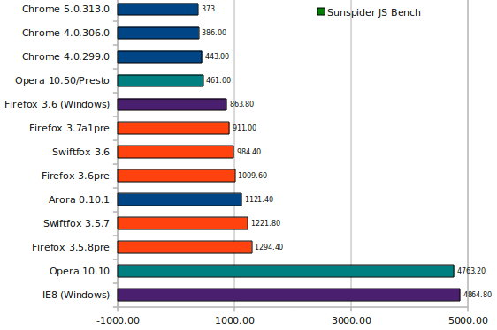

也紀念我們永遠的朋友 李士傑先生（Shih-Chieh Ilya Li）。
2010 年 2 月的近期瀏覽器 JS 測試比較
個人電腦平台上的瀏覽器還是各平台瀏覽器的根源環境，我們再來比較一下近期包括 Firefox 新系列、Google Chrome、Opera 新版等幾個新一代瀏覽器，在 Linux 平台上的 JavaScript 效率與瀏覽效率。同時，比較一下，標準版 Firefox 在 Linux 與 Windows 平台上跑，那邊比較快。（雖然我很早就知道了，不過在 Linux 平台，特別編譯過的版本還是有差）

Shorter is better. yblog.org
測試結果簡述
我用的平台是 Ubuntu 9.10 32 位元的桌面系統，雙核心處理器，IE8 瀏覽器是在同一台測試，用 Windows XP 系統。
在使用 JavaScript 程式碼較重的網站如 Facebook、Gmail、 GoogleDocs 等網站，瀏覽器的 JS 效能會影響瀏覽效率與系統反應時間的快慢，SunSpider JS測試頁面是著重這方面的測試。
這次測試中最快的是Google Chrome系列瀏覽器， 我用的測試版本是 5.0、4.0 系列的兩個版本，測試結果呈現的成績快到只有 373ms。KHTML 引擎（Webkit 屬於KHTML的衍生物，Google 另外開發的 JS 引擎自稱為 V8，可以大幅加快 JS 效率）真的就是這麼快嗎？（Apple 的 Safari 採用一樣的瀏覽器引擎，改良為 Webkit，也很快）
來看看和 Chrome 同樣是使用 Webkit 瀏覽引擎的Arora，它是一個輕量級瀏覽器，測試成績和 Google 自己開發的程式碼，又最佳化過的 Chrome 有一段差距，不過還是比 Firefox 3.5.X 系列瀏覽器要快，輸給 3.6 系列的版本。
而社群關注的 Firefox 新版瀏覽器，採用 Gecko 瀏覽引擎，包括 Firefox 3.7alpha1、Firefox 3.6，速度都有進步，除了這個 JS 測試，在其他的測試中也已經拉近和 Chrome 的差距，也比 Arora 快。
一般使用 Firefox 瀏覽器網友最常用的正式版本已經進步到 3.6 正式版了，我是拿 3.6.2 pre 來測試，並且和針對不同平台處理器最佳化過 Firefox 程式碼的 Swiftfox 3.6 來一起比較。兩個版本的 Swiftfox 在 JS 測試成績上都略勝 Mozilla 在 Linux 發行版上的套件一籌，但在實際環境中瀏覽的經驗，讓我感覺雙方的差距明顯，瀏覽的反應時間比沒有最佳化過的 Firefox 3.5、3.6 都要快不少。
Opera 新推出的 10.10 瀏覽器功能雖然多元，採用的瀏覽引擎為 Presto，不過在我的機器上跑 JS 的測試成績很慢，慢到和 IE8 差不多，鑑於我不太喜歡 Opera 的使用者介面，新舊版皆然，即使它也支援很多擴充套件，我一直以來也不在 Linux 平台上推薦這個瀏覽器。不過，Opera 10.5 測試版的效率非常好，不但比 10.10 要快上不少，比起 Firefox 系列更是快上許多。
最後一名是採用 Trident 瀏覽引擎的 IE8，這個永遠最後一名的系列瀏覽器除了最近很紅的 IE 被駭資安問題外，看網頁卡卡的，雖然有擴充套件和一些微軟自以為很炫的功能，不過我因為沒在用 Windows，這個瀏覽器也實在用不到，頂多是用自然人憑證才打開 Windows 來用。
瀏覽器平台比較
Opera 的測試成績大進步，給了我們一個啟示，儘管 SunSpider 一向是 Webkit/KHTML 引擎的瀏覽器 (Chrome、Safari) 測試成績較佳，但 Opera 從原本慢到和 IE8 差不多，在 10.5 改善 JavaScript 引擎後，大幅提昇速度到接近瀏覽器速度王者 Chrome 的程度，意味著要在 JS 測試中有好的表現，努力是有機會的。
可是，Firefox 系列卻不是這麼回事，越新的版本效能越好，但沒有大幅的改進，都是小幅度的，固然也受到其先天架構限制的影響，TraceMonkey JavaScript 編譯引擎雖然一直在改善，Firefox 3.6 已經比 3.5 系列要快上近 2 成，但和 Chrom e全系列、Opera 10.5 仍差了一段。除非在之後的版本有顯著的改善，不然 Firefox 3.7 推出後，應該就是瀏覽器效能的老三。
另外，在 Linux 平台上跑 Firefox，效能比在 Windows 平台上要慢一些，這是受限於顯示驅動，以及套件的影響。不過，Chrome 卻不是這麼回事，它在 Linux 平台與 Windows 平台上的表現是一樣快的。
IE8 絕對比 IE6、IE7 好，但它畢竟還是微軟的，改善程度有限，只要能用，沒有太嚴重安全性問題就萬幸了。
近期瀏覽器感想
我目前的工作與居家環境都使用 Linux 平台，必須用 IE、Safari 以外的瀏覽器，這使得我的瀏覽器選擇受限，但還是有幾款可以挑。
Google Chrome 的效率非常好，在還沒有推出擴充套件的支援以前，我還不打算轉移我的主要瀏覽器為 Chrome，考量的就是擴充套件和使用習慣的問題。
常用的幾個套件已經有轉移到 Google Chrome 上了，使用玉山銀行網路 ATM 的擴充套件也已經有，這讓我們在 Linux 平台上轉帳很方便。更重要的是 Chrome 對於 HTML5 的支援，套件的數量增加，都顯示出它的潛力十足，日前已經站穩瀏覽器市占率第三大（第一和第二分別是 IE、Firefox 系列）。
倘若 Firefox 瀏覽器的效率能夠加點油，不要說趕上 Chrome，至少要做到接近 Chrome 達 7、8 成的水準就好，我可能就會放棄轉移到 Chrome 的念頭，可惜它現在的速度還是比 Chrome 慢上一截。目前看起來 Firefox 3.6 有改善，3.7 一樣也有改善，但老實說等它們正式推出來後，Chrome 不知道又變得多快了？但我認為兩個系列瀏覽器的效能差距會逐步拉近。
安全性問題方面，我還是比較挺 Firefox，除了擴充套件還是比較多，社群修正 bug 的速度也快，而且已經累積相當多的經驗了，越做越好，缺點就是系統效率問題，需要維護、減肥。
越複雜的網頁環境越能看得出瀏覽器的效能差異，而更多新的網頁標準、元素與參賽者的加入，相信會更豐富瀏覽器市場的後續競爭戲碼。
作者簡介
永遠的真田幸村
成立部落格平臺「優格網」，從 2004 年 11 月開始，便開始撰寫部落格文章，每日的平均產量超過 1 篇，而且因為熱愛 Linux 作業系統，而積極推廣相關的應用，期望更多人使用這種作業系統。
學經歷：畢業於臺北大學公共行政學系(夜間部)，曾任 PChome Online 資訊人員與 PChome 雜誌技術編輯，目前任職於某產業研究機構，針對新科技與電子產業的資料分析與報告。
成立網站：優格網
個人部落格：https://yblog.org/ivan/
Address：No.128, Sec.2, Academia Rd., Institute of Information Science, Academia Sinica, Nangang District, Taipei City 11529, Taiwan (R.O.C).
Privacy Policy. Terms-of-use